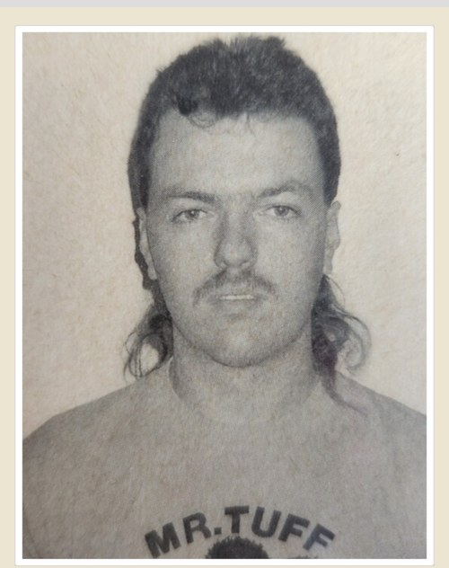
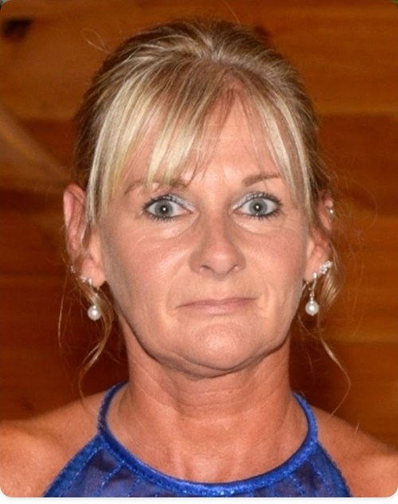

This page honors classmates of Smithville High School's Class of 1986 who are no longer with us. They were forged alongside every one of us, and they are remembered here by name.
James "Jim" Bedlion
Jul 10, 1968 – Jun 26, 2020
Kenneth A. Bolin
Jan 10, 1968 – Oct 2, 2013
Roy K. Franks
Jun 17, 1968 – Sep 19, 2023
Michael D. Hartzler
Dec 10, 1967 – Jun 28, 2020
A Smithville classmate through 8th grade, later of Central Christian High School.

Richard D. Matty Jr.
May 26, 1968 – Apr 28, 2023

Teresa A. (Snyder) Winton
Jul 2, 1967 – Jun 5, 2021
Jeffrey A. White
Sep 17, 1968 – Apr 10, 2009
Add a classmate to this page
If we have lost touch with a classmate who has passed, please let the committee know. A name and approximate dates are enough to start — a photo or a few words are welcome too.
Submit a name